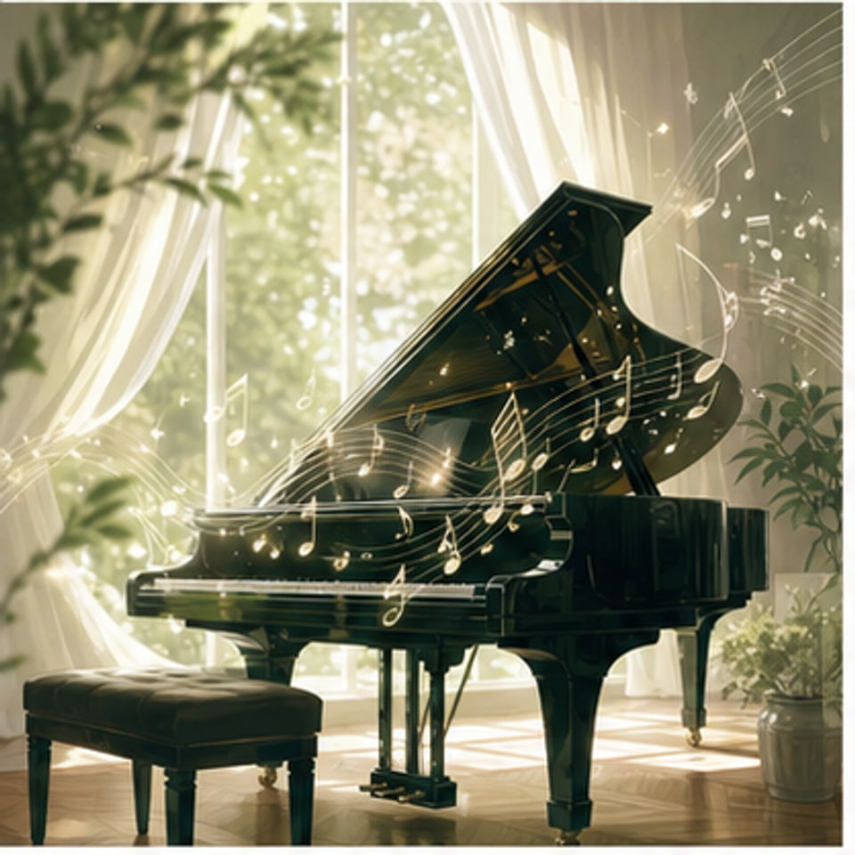

PIANO MOOD QUIZ
rikupiano音色タイプ診断
ピアノの音色は、聴く人の気分や思い出によって違って響きます。32問に答えると、あなたがどんな音楽の楽しみ方をするタイプか、rikupianoの世界観に合わせた8つの音色で表示します。
Instagramや活動リンクは、公開前にrikupiano様の希望導線へ差し替えます。

8タイプ一覧
診断コンテンツ
PIANO MOOD QUIZ
ピアノの音色は、聴く人の気分や思い出によって違って響きます。32問に答えると、あなたがどんな音楽の楽しみ方をするタイプか、rikupianoの世界観に合わせた8つの音色で表示します。

8タイプ一覧